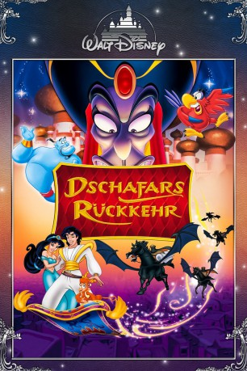

#3761 Dschafars Rückkehr
Alternativ: The Return of Jafar
 
 IMDB-Wertung: 5.9 / 10
IMDB-Wertung: 5.9 / 10  Metascore: 0
Metascore: 0 
Papagei Jago, der ehemalige Berater des teuflischen Dschafar, kehrt nach Agrahbah zurück und wird im Palast aufgenommen, nachdem er Aladin vor dem schurkischen Banditen El-Fatal gerettet hat. Kurz darauf findet El-Fatal in der Wüste Dschafars Wunderlampe und befreit den Zauberer. Beide wollen Aladdin vernichten und zwingen Jago, ihm eine Falle zu stellen.
Jahr: 1994
Dauer: 66 Minuten
FSK: 0
Land: USA Studio: Walt Disney Home VideoTonspuren: DD2.0 - ,
Untertitel:
Auflösung: 1080p (1920x1080) Größe: 3491 MB
Genre: Abenteuer, Fantasy, Animation/Trick, Familie, Liebe, Musical
Regisseur: Toby Shelton, Tad Stones, Alan Zaslove
Drehbuch: Michael Grais
Soundtrack:
Darsteller:
Datei: X:\Kinder Disney HD\Aladdin\Dschafars Rückkehr (1994, FSK0, 1920x1080).mkv seit 07.06.2016
Festplatte: Kinder-Filme+Trick
 Es gibt insgesamt 8 Filme in der Gruppe 'Kinder Disney HD\Aladdin'
Es gibt insgesamt 8 Filme in der Gruppe 'Kinder Disney HD\Aladdin'